| 日付 | 2017年5月14日（日） |
|---|---|
| 山域 | 丹沢 |
| メンバー | グループ（男2女2子供3） |
| 山行形態 | 子連れ日帰り |
| アクセス | 電車、バス、ケーブルカー |
| ルート (Map) | 阿夫利神社駅 (9:59) - (10:53) 十六丁目追分 - (11:36) 大山 (12:34) - (14:04) 阿夫利神社駅 |
久々に山友達と山に行くことにする。
みんな忙しく、ずいぶんご無沙汰だった。
しばらく山から遠ざかっていたメンバーもいるため、
今回は無難に丹沢の大山を登ることにする。
バスで大山ケーブル駅に到着。ここに来るのは7年振りだ。
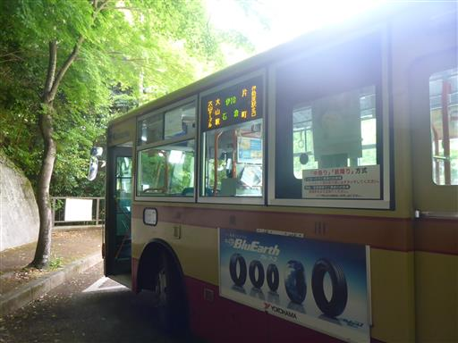
バス停からケーブルカーの駅まで少し距離がある。
途中には大山の土産物屋が並んでいる。
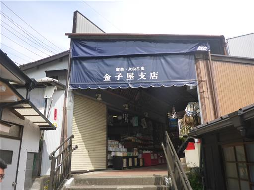
大山はこまが古くから造られている。地面にこまの絵が描かれている。
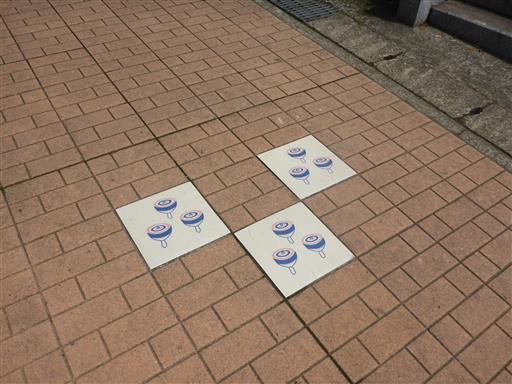
土産物屋を抜けてしばらく階段を登ると大山ケーブルカー乗場に到着する。
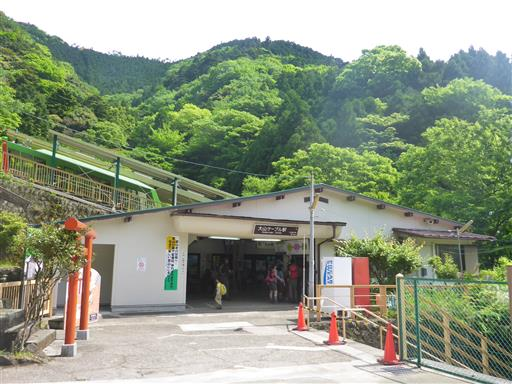
大山ケーブルカー。歴史が古いケーブルカーだが車両は2015年に一新されたため新しい。
大山に来るのは5回目だが、ケーブルカーを利用するのはこれが初めてだ。

ケーブルカーからは遠くに相模湾を眺められる。

途中で大山寺駅を通過する。途中に駅があるケーブルカーとは珍しい。
しかし、ここで乗り降りする人は誰もいなかった。
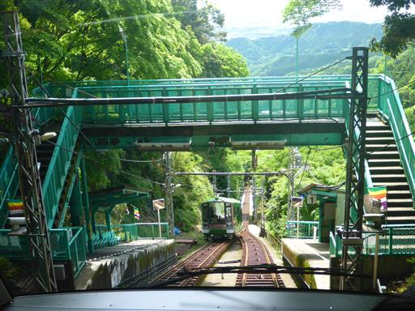
阿夫利神社駅に到着。標高678m。
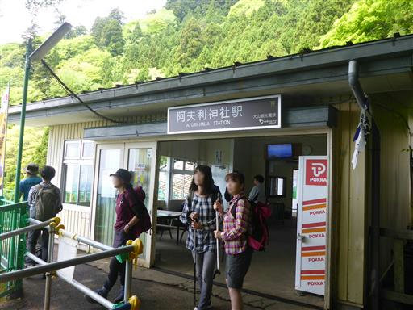
ここからは素晴らしい展望が広がる。
緑の木々と街、そして相模湾が見渡せる。
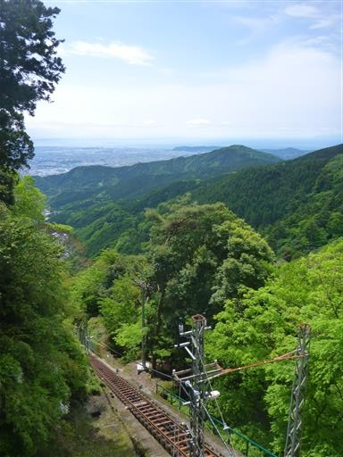
一大観光地であるこの地は山の中腹にも飲食できる店が並んでいる。
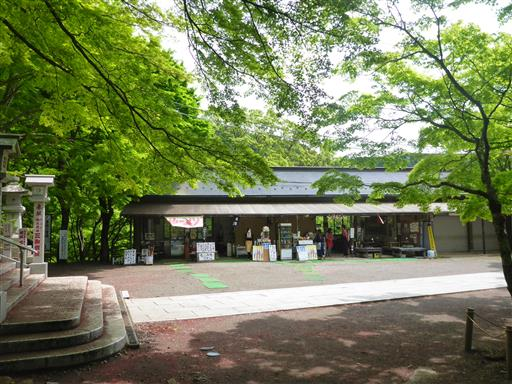
石の階段を登って阿夫利神社に向かう。
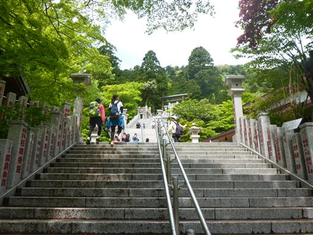
ほどなくして阿夫利神社に到着。大勢の観光客で賑わっている。
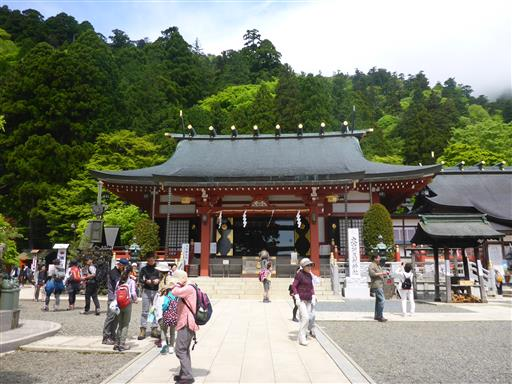
急な階段を登っていく。
側に手すりが老朽化しているとの注意書きがあるのが恐ろしい。
この傾斜の階段で転がり落ちるとかなり危険だ。

階段を登りきると本格的な登山道が始まる。
本日は山の友人達も一緒なので、息子はやる気を見せている。
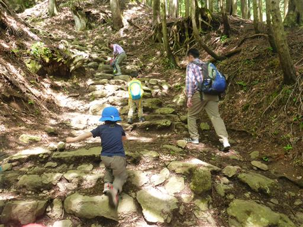
大きな木が立っている。杉の木だろうか？
大山は夫婦杉が有名だが、他にもそこそこ大きな木がある。

天狗の鼻突き岩。天狗が鼻を突いてあけた穴と言われている。
自然にあいた穴だとすれば、確かに不思議な岩だ。
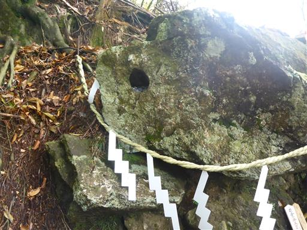
途中で木道が整備されている。土が抉れるのを防ぐためだろうか？
以前来た時にはなかった気がする。
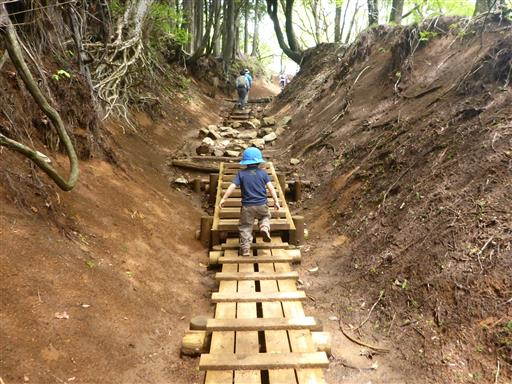
登山道は次第に雲に覆われる。この山は海に近いからか、天気が悪いことが多い。
大山は別名、雨降り山とも呼ばれ、雨乞いの山だった。
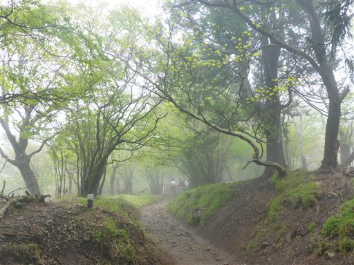
山頂直下の鳥居を潜る。ここを過ぎると少し急な傾斜を一登りして山頂だ。
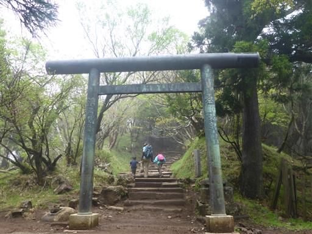
山頂が見えてきた。
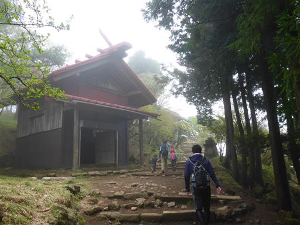
大山の山頂に到着する。
山頂標識付近は混雑しているため、少し離れた場所で昼食をとることにする。
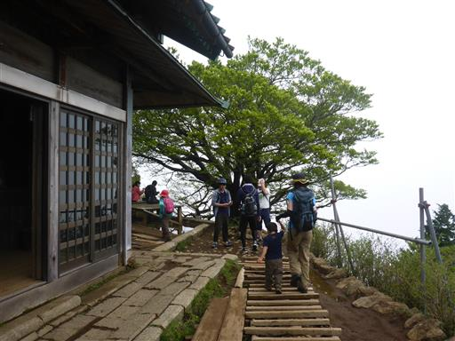
しばらくすると雲が取れて展望が広がる。
快晴ではないが何も見えないより良い。
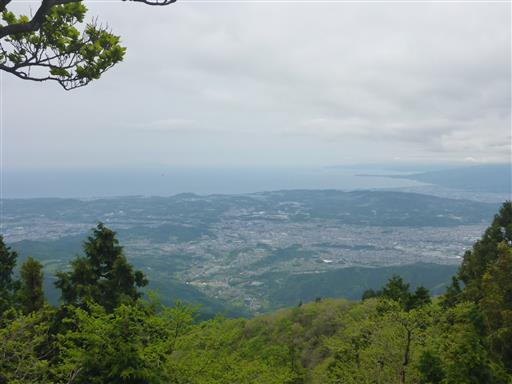
子供たちは水たまりと虫で遊んでいる。
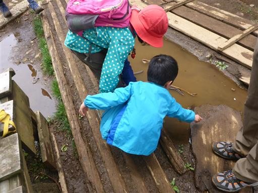
下山前に山頂標識を拝むことにする。ここは大混雑だ。
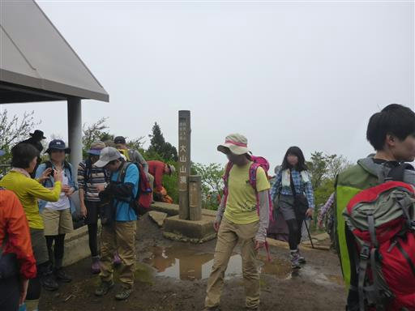
雲がやって来て再び展望を隠して行く。
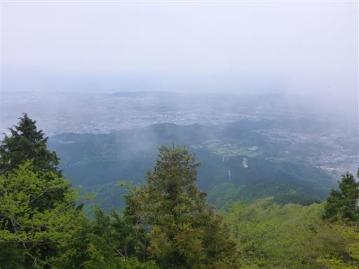
下山は無難に登りに使った道を下る。地面が濡れて滑りやすいので慎重に下る。
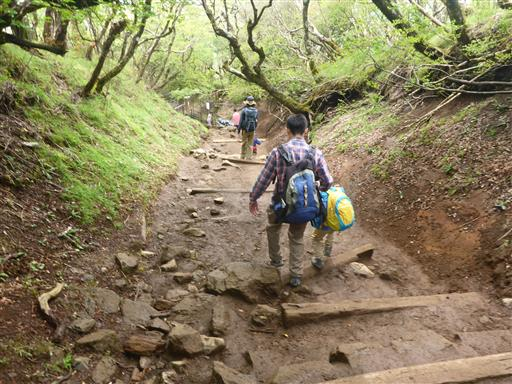
夫婦杉。立派な木だ。

阿夫利神社まで下山してくる。ここまで下ると展望が広がる。
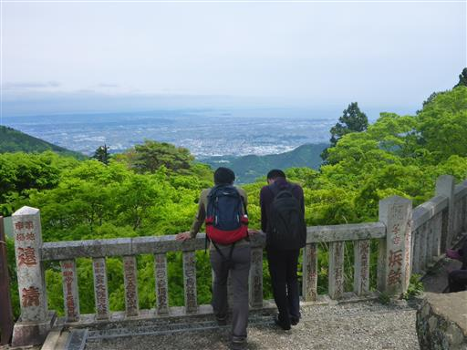
新緑の季節はもう過ぎているが、緑色がきれいだ。
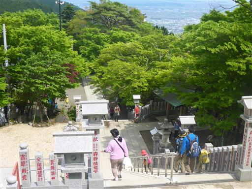
大山の地図。本日歩いたコースを解説する。
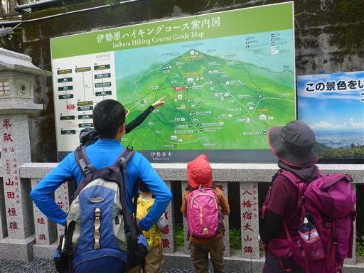
ケーブルカーの駅に到着する。遠くに江の島が見えている。
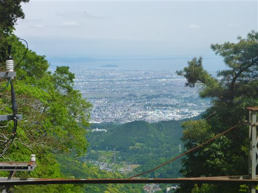
ケーブルカーの最前列を確保。子供の身長ではちょっと前の景色は見にくい。

土産物屋でいろいろ買い物をしながらバス停を目指す。
久しぶりに山友達と一緒に歩けて楽しい山行だった。
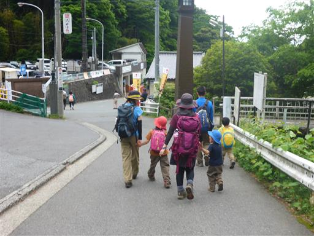